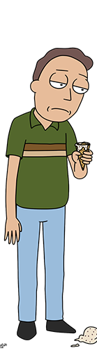
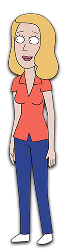
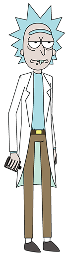

summer smith
Summer Smith es la hija mayor de Jerry y Beth. Es la única en enterarse de que el Morty y el Rick son de otra dimensión (Dimensión C-137) y que los de su dimensión (desconocida aún) habían muerto.
morty smith

Su nombre real es Mortimer Smith apodado como "Morty" y es uno de los protagonistas principales de la serie animada Rick and Morty. Tiene constantes aventuras con su abuelo Rick Sánchez para ayudarlo...
jerry smith
Jerry Smith es el esposo de Beth Smith, además es el padre de Summer Smith y Morty Smith.Jerry siempre trata de llevar a su familia por el camino correcto y busca lo mejor para ellos, pero a menudo eso no le sale...
beth smith
Beth Smith (nombre de soltera Beth Sánchez) Es la hija de Rick pero técnicamente es la hija de un Rick muerto en un accidente, a lo que el Rick y Morty originarios de la Dimensión C-137 ocuparon sus lugares.
rick sanchez
Richard "Rick" Sánchez es un viejo científico alcohólico que acostumbra hablar de manera vulgar y entre eructos, la mayoría de las veces tiene un rastro de saliva en la boca. Es padre de Beth Smith y el abuelo materno.